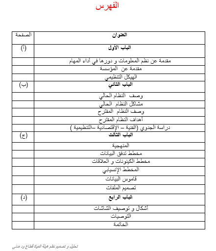
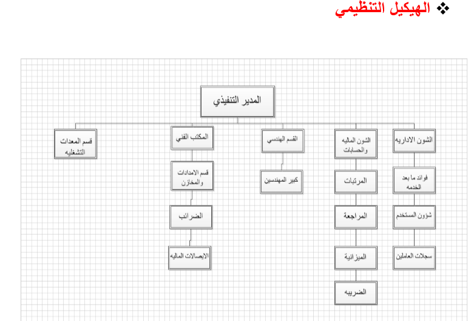
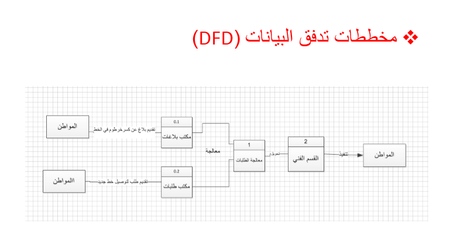
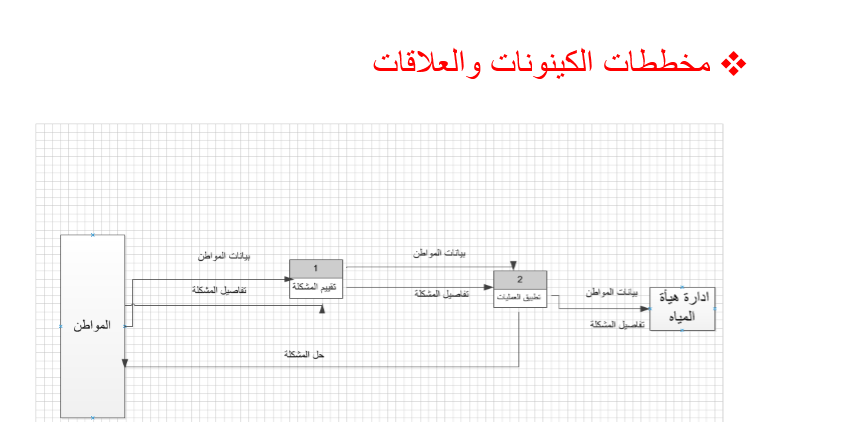
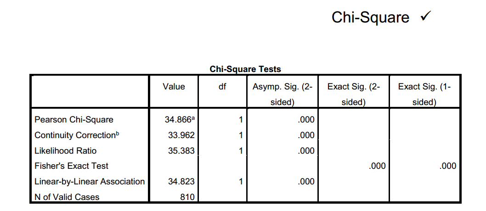
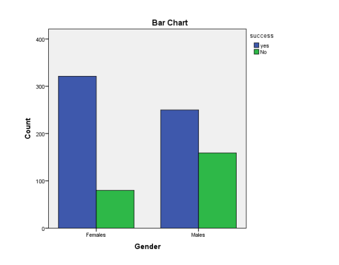
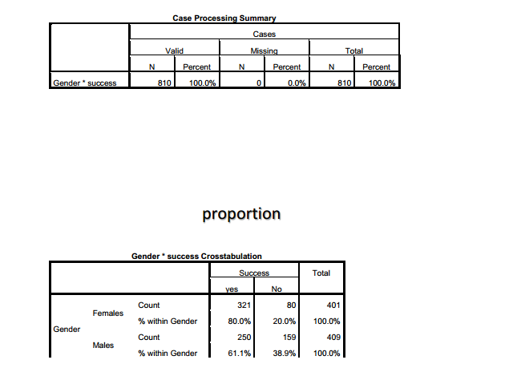
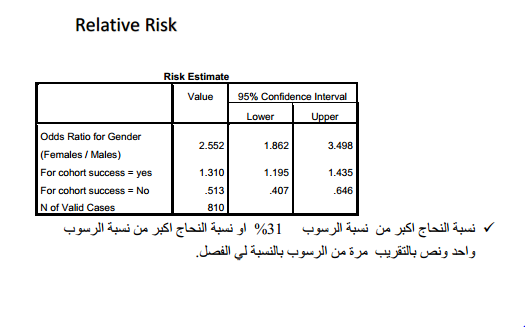
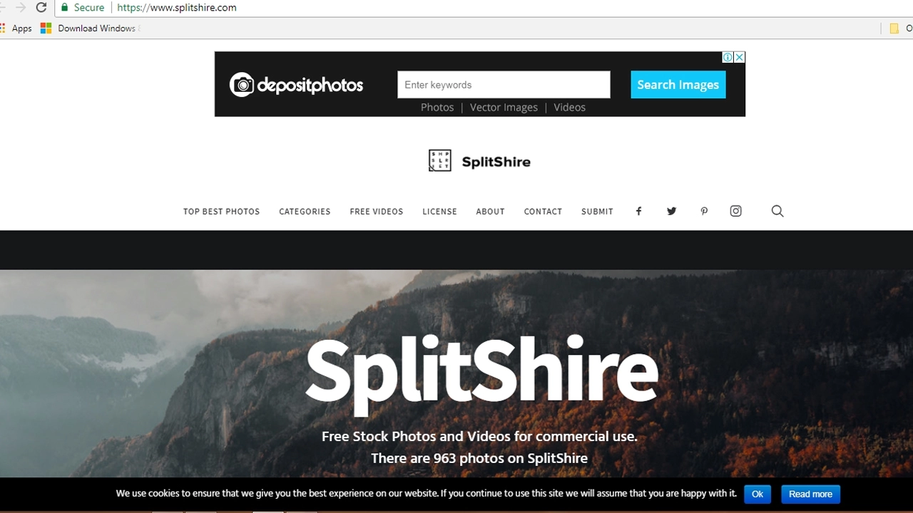

تقدم لكم افضل البرامج والتطبيقات والتحاليل في كل من التحليل الاحصاء وتصميم التحليل النظم وتصميم المواقع ومعالج البيانات
تصميم تحليل النظم
منهج تصميم النظم ، وهو المكمل لتحليل النظم ، حيث يستكمل دورة حياة همدسة البرمجيات ، بتصميم النظام الجديد او الحل المقترح ، حيث يتم في هذه المرحلة تصميم المخرجات ومدخلات ، وتصميم الملفات وقواعد البيانات ، وإدارة تشغيل البيانات ، تصميم واجهات المستخدمين ، وموضوعات الأمن المعلومات ، والحفظ والاسترجاع والنسخ الاحتياطي ، وجودة البرمجيات .ومراحل الانتقال إلى تنفيذ النظام .




تحليل احصاء
تعريف النظام الإحصائي Spss: هو أحد التطبيقات الإحصائية التي تعمل تحت مظلة ويندوز، وهو عبارة عن مجموعة من القوائم والأدوات التي يمكن عن طريقها إدخال البيانات التي يحصل عليها الباحث العلمي عن طريق الاستبيانات أو المُقابلات أو المُلاحظات ، ومن ثم القيام بتحليلها (التحليل الاحصائي ) ، ويعتمد النظام الإحصائي Spss على المعلومات الرقمية، ويتميز البرنامج بقدرته الكبيرة على مُعالجة البيانات التي يتم مدُّه بها، ويمكن استخدامه في جميع مناهج البحث العلمي.
خدمة التحليل الاحصائي
أهمية النظام الإحصائي spss:
عند القيام بجمع المعلومات والبيانات المتعلقة بمناهج البحث العلمي فإن الأمر يتطلَّب بعض الأدوات التي تساهم في عملية التصنيف، ومن ثم التحليل، والوصول إلى النتائج التفسيرية لافتراضات البحث المقدمة من الباحث العلمي، ويُعد النظام الإحصائي Spss من أبرز الأدوات التي تستخدم في ذلك، حيث يقوم البرنامج بوصف المتغيرات، وبالتالي تعميم ما يتم التوصل إليه من نتائج على مجتمع الدراسة، ومن المتعارف عليه أن الحصول على المعلومات من جميع مفردات المجتمع أمر غاية في الصعوبة، ويتطلب مبالغ مالية كبيرة، بالإضافة إلى ضرورة ضم عدد كبير من المشاركين في البحث العلمي، لذا فإن استخدام أسلوب العيِّنة هو الحل الأفضل للحصول على النتائج في أقصر فترة زمنية وبأقل مجهود




تصميم المواقعي
تصميم المواقع هو عملية تخطيط وتنفيذ محتويات متعددة الوسائط عبر الشبكة (الإنترنت )، بواسطة أنماط التقنيات كلغات التوصيف المناسبة للعرض على متصفحات الإنترنت أو بقية واجهات المستخدم المبنية في الإنترنت.
